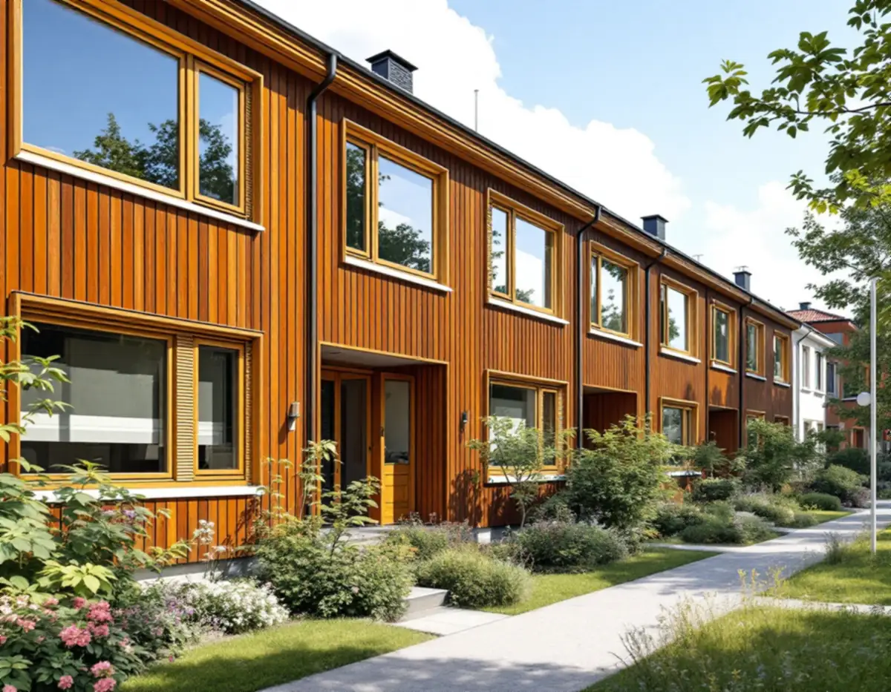
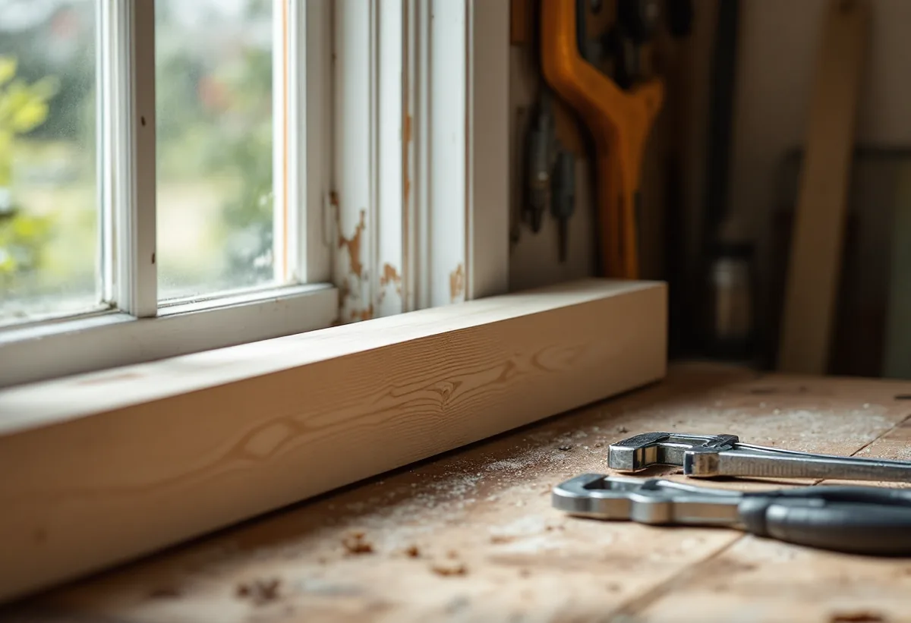
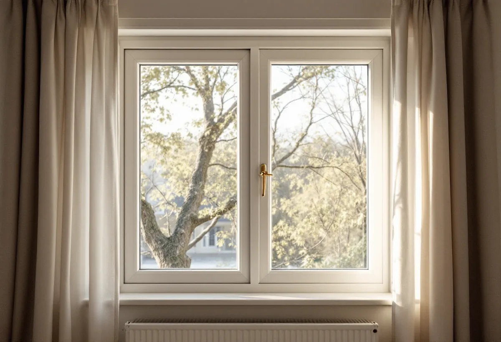

Ansvaret
Vi reder ut om du eller föreningen ansvarar för fönstren.
Fönstren i Kistas radhus är snart femtio år gamla. Många av dem går fortfarande att laga, måla om och täta i stället för att bytas. Geal Entreprenad AB renoverar fönster på radhus, kedjehus och villor i Kista och Akalla och börjar med att ta reda på vem som ansvarar för fönstren.

Enligt Stadsmuseets skrift om Kista i serien Stockholms spår byggdes stadsdelen ut åren 1975–1980 med omkring 780 småhus och 2 500 lägenheter i flerbostadshus. Staden tillämpade här friare arkitektoniska former än i de andra stadsdelarna på Järvafältet.
Fönstren i husen från den tiden är alltså byggda för ett och samma område under några få år. Det gör att de ofta ser likadana ut inom en husgrupp, och att en renovering kan planeras för flera hus på en gång.

Stadens områdesfakta för 2025 visar 482 småhus med äganderätt och 404 i bostadsrätt i stadsdelen Kista, och i Akalla 170 med äganderätt och 493 i bostadsrätt. Äger du huset ansvarar du själv för fönstren. I en bostadsrätt avgör stadgarna.
Bostadsrättslagen utgår från att bostadsrättshavaren håller lägenheten i gott skick på egen bekostnad om inte stadgarna säger annat. Därför börjar vi med att läsa vad föreningens stadgar säger om fönstren, innan vi föreslår en renovering för dig eller för hela föreningen.
Stockholms stad räknar upp vilka fönsterändringar som kan kräva bygglov: att byta material eller kulör, ändra storlek eller placering, ändra dimensioner, proportioner eller profilering på karmar, bågar och spröjs, byta upphängning, till exempel från sidohängda till vippfönster, och ändra indelning. Det beror också på vilken byggnad det gäller.
En renovering där fönstret behåller material, kulör, mått och upphängning ändrar inget av detta. Det gör renoveringen till ett enkelt val även när huset ligger i en grupp där alla fönster ska se likadana ut.
Riksantikvarieämbetet påpekar att moderna tätningslister ger en avsevärd förbättring av både ljud- och värmeisolering, och att det finns tillsatsrutor som fästs på innerbågen med en profil av plast eller aluminium. Enligt myndigheten ger gummilisterna ett lufttätt utrymme mellan tillsatsruta och båge, och de problem med smuts och kondens som ofta befaras uppstår i regel inte.
Tätningslisterna tillverkas av EPDM-gummi i svart eller brunt och av silikongummi i vitt, i olika profiler för olika springor. Vi mäter springan på varje fönster innan listen väljs.
Riksantikvarieämbetet skriver att det framför allt är bottenstyckena i karm och båge som skadas, och att det oftast går att byta bara de skadade partierna. Sol och väta bryter ner färg och kitt på fönstrens mest utsatta delar, och sydfasader är särskilt utsatta.
Vi börjar därför med fönstren på husets solsida och med nederdelen av varje båge. Myndigheten påpekar också att ett fönster ibland måste justeras med hänsyn till sättningar i huset. En båge som skaver mot karmen slits ojämnt och släpper in fukt, så vi justerar gångjärnen innan bågen målas och tätas. Om måleri och snickerier i Kista i övrigt kan du läsa under målare i Kista och snickare i Kista.

Vi reder ut om du eller föreningen ansvarar för fönstren.
Bottenstycken, kitt, färg och beslag bedöms fönster för fönster.
Per hus eller per grupp när flera hus renoveras.
Lagning av skadade delar, kittning och målning i samma kulör.
Tätningslist eller tillsatsruta på innerbågen.
Vi går igenom fönstren med dig eller styrelsen.
Reparation och målning av fönster på ett småhus som du äger och bor i räknas som rotarbete hos Skatteverket. Avdraget gäller arbetskostnaden. I en bostadsrätt beror avdraget på om fönstren är något du ansvarar för enligt stadgarna; arbete som föreningen ansvarar för ger inget rotavdrag.
Avdraget är högst 30 procent av arbetskostnaden, högst 50 000 kronor per person och år och högst 75 000 kronor tillsammans med rutavdrag. Material och resor ger inget avdrag. Geal drar avdraget direkt på fakturan.
Antal fönster, skador på bottenstycken, kitt och färg, val av tätning och om flera hus renoveras samtidigt. Efter ett gratis platsbesök får du ett skriftligt kostnadsförslag.
Byta eller renovera fönster.
Fönsterbyte i Stockholm →Takbyte, takbesiktning och plåtarbeten.
Takläggare i Kista →Låga tak, tätskikt och takbrunnar från 1970-talet.
Takrenovering i Kista →Gårdshus vid radhus och villor.
Attefallshus i Kista →Radhusen, föreningen och ventilationen.
Badrumsrenovering i Kista →Uterum, altan och föreningens tillstånd.
Byggföretag i Kista →Radhus, atriumhus och husgruppen.
Fasadmålning i Kista →Panel, skivor och isolering på radhus.
Fasadrenovering i Kista →Radhus och villor från 1970-talet.
Fönsterbyte i Kista →Nya golv på betong i radhus och lägenheter.
Golvläggare i Kista →Golvslipning i bostadsrätt, hyresrätt och radhus.
Golvslipning i Kista →Småhus i förening och kök från 1970-talet.
Köksrenovering i Kista →1970-talets hus, asbest och ROT.
Målare i Kista →Rännor, stuprör och beslag.
Plåtslagare i Kista →Garderober, väggar och dörrar i lägenheten.
Snickare i Kista →Platta tak och pulpettak.
Takbyte i Kista →Lägenheter och radhus från 1970-talet.
Tapetsering i Kista →Tillbyggnad vid radhus och villor.
Tillbyggnad i Kista →Renovera hela huset eller lägenheten.
Totalrenovering i Kista →